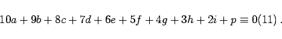

Inhalt Index DeskTop Bronstein

 Algebra und Diskrete Mathematik Elementare Zahlentheorie Codierungen Prüfzeichenverfahren
Algebra und Diskrete Mathematik Elementare Zahlentheorie Codierungen Prüfzeichenverfahren


Eine einfache Anwendung von Zahlenkongruenzen ist die Verwendung von Prüfziffern in der Internationalen Standard-Buchnummer ISBN. Büchern wird eine 10-stellige Ziffernkombination der Form
| (5.285a) |
zugeordnet. Dabei ist a die Gruppennummer (a=3 bedeutet z.B., daß das Buch aus Deutschland, Östereich oder der Schweiz kommt), bcd ist die Verlagsnummer und efghi die Titelnummer für das einzelne Buch des betreffenden Verlages. Als Prüfziffer ist p eingeführt, damit fehlerhafte Buchbestellungen erkannt und im Zusammenhang damit stehende Unkosten minimiert werden können. Die Prüfziffer p ist die kleinste nichtnegative Zahl, die die folgende Kongruenz erfüllt:
|  | (5.285b) |
Anstelle von 10 verwendet man als Prüfziffer auch das nichtnumerische Zeichen X.
(s. auch Kontonummernsystem EKONS).
Man kann nun für jede übermittelte ISBN-Nummer nachprüfen, ob die angegebene Prüfziffer mit der aus der restlichen Ziffernkombination ermittelten Prüfziffer übereinstimmt. Bei Nichtübereinstimmung liegt mit Sicherheit ein Fehler vor. Beim ISBN-Prüfziffernverfahren werden folgende Fehler stets aufgedeckt: